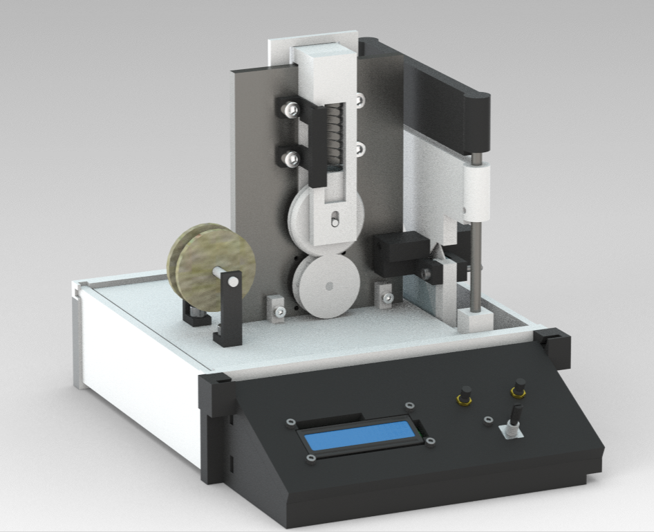
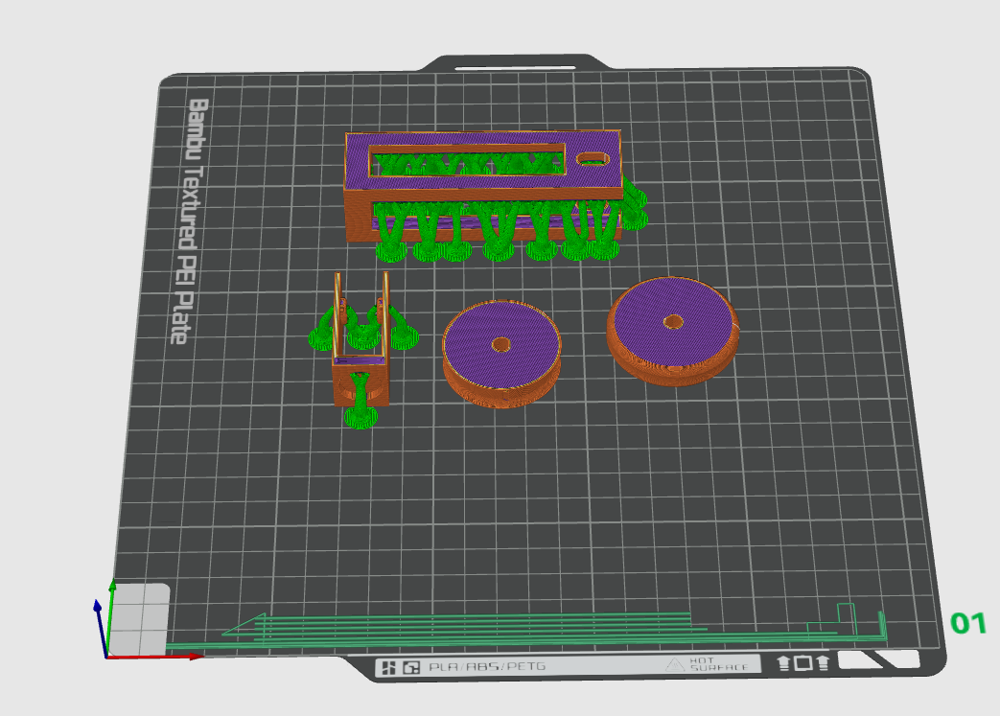

Automated Wire Cutter & Stripper
A compact, low-cost machine that automates wire feeding, cutting and
stripping for small workshops and educational use — built around an
Arduino Uno with twin stepper-driven axes and a menu-driven interface.
Wolfson School, Loughborough University · Module 23WSC325 · Student ID F226426

Image placeholder — add CAD renderFigure 1 — Full system CAD
The problem & the brief
Preparing large quantities of cut-and-stripped wire by hand is slow, tiring and inconsistent — and commercial machines that solve it are typically either very expensive or too large for small workshops and teaching labs. The brief was to close that gap with an affordable, compact alternative.
I set four objectives at the outset: automate feeding and stripping with repeatable accuracy; handle a range of wire sizes from 0.5 mm² to 4.0 mm²; provide a simple interface for setting length and batch quantity; and base the controller on an Arduino Uno to keep it low-cost and accessible.
How it works
Wire Feeding
A stepper motor drives a lower roller while a spring-loaded upper roller keeps constant clamping pressure on the wire. Feed length is set by counting calibrated motor pulses against a measured 100 steps/mm.
Cutting & Stripping
Rather than a servo, a leadscrew-driven stepper moves the blade vertically for controlled, repeatable motion — simpler mechanically while still giving fine control over cut depth.
Operator Interface
A rotary encoder with a push-button sets wire length and number of cuts, and an LCD gives live feedback — so the machine runs without touching any code.
Motion Control
Two DRV8825 drivers handle the feed and cut axes from the Arduino Uno, using step/direction signals and microstepping for smoother, more precise movement.
Under the hood
The drive hardware was chosen by checking the SANMOTION F2 (SF2422-10B41) and Motech steppers against the DRV8825 driver: a 2-phase bipolar motor at 24 V and 1 A/phase, comfortably inside the driver's 8.2–45 V range and ~1.5 A/phase (uncooled) capability. Each driver's current limit was set by measuring and tuning VREF — 0.5 V for the 1 A Sanmotion and 0.665 V for the 1.33 A Motech — for reliable torque without overheating.
From CAD to hardware
The prototype combined manual machining with 3D printing to keep it compact, strong where it mattered, and light everywhere else. The motor backing plate for the feed system was manually milled from aluminium for the precision and stiffness needed to hold the stepper under load, then hand-finished and deburred. Structural parts — the electronics housing and control panel — were FFF 3D-printed in PLA, designed for easy assembly and lightly sanded for a clean, accurate fit.

Image placeholder — add 3D print photoFigure 2 — Housing & control-panel parts, FFF 3D print (PLA)
What it achieved
Feeding was tested across 0.5, 1.5, 2.5 and 4.0 mm² wire and proved highly consistent — within ±2 mm on every gauge, with no slippage and no deformation of the insulation. Blade movement was smooth and reliable, and insulation cutting was partial but repeatable. Full stripping wasn't always achieved on tougher wires — a torque limit on the cutter axis rather than a flaw in the approach.
- Feed accuracy within ±2 mm across all four tested gauges (0.5–4.0 mm²).
- No slippage or insulation deformation during feeding.
- Menu-driven length and batch-quantity control with live LCD feedback.
- Each subsystem validated independently before full integration.
- Full stripping limited by cutter-axis torque and blade geometry on thick insulation.
What I'd do next
The biggest lesson was how much small design choices — clamping force, motor timing, mounting stiffness — decide whether an automated system is actually repeatable. With more time I'd fit a higher-torque cutter motor, refine the blade geometry, stiffen the blade mount, and add an automatic length-measuring sensor to close the loop on feed and cut accuracy.
← Back to ProjectsWant to talk through it?
Happy to go deeper on the design, the control code or the testing.